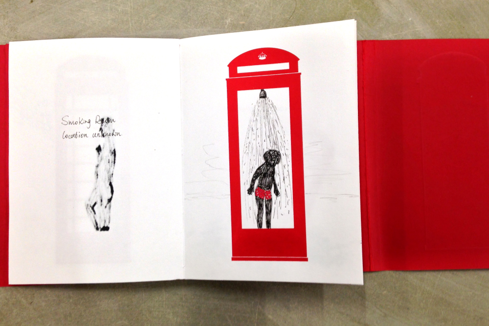
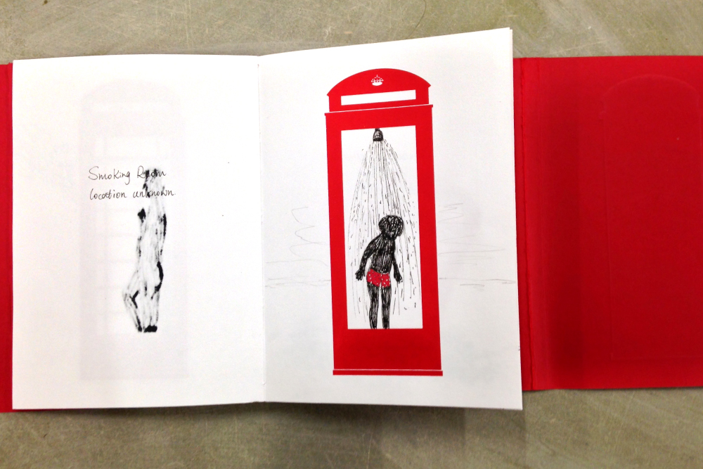

Initially I was really fixated on a more realistic representation of the juxtaposition of the old and new, but then I spotted a modern telephone box that features wifi function. I immediately realized that this is the object I was searching for, something that merges the traditional and the contemporary. Thus I began my journey of investigating the history and future of the iconic British Kisok.
 
